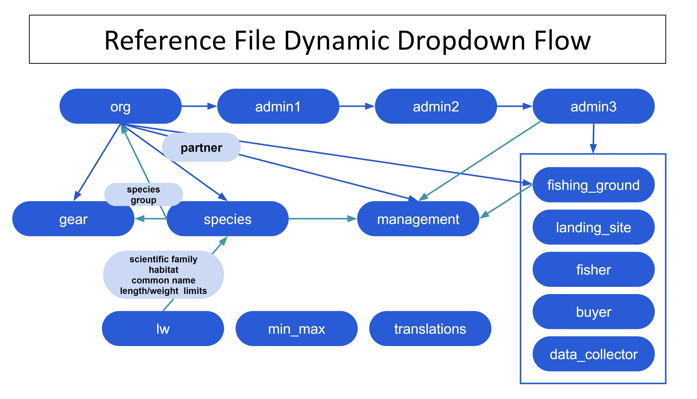

Mga Reference File
Pag-Update Ng Mga File Ng Sanggunian
Ang lahat ng mga file ng sanggunian ay na-update sa Smartsheet Dynamic View. Ang mga file ng sanggunian ay nagsisilbing mga input para sa mga listahan ng dropdown sa mga form ng KoboToolbox at naglalaman ng data na idinagdag sa mga master dataset sa pamamagitan ng mga pagsali. Naglalaman ang mga ito ng komprehensibong impormasyon sa mga antas ng pamamahala ng mga pamayanan ng pangingisda (bansa, lalawigan, distrito, nayon), mga landing site, Lugar ng pangingisda, mangingisda, mamimili, kolektor ng data, species, lugar ng pamamahala, uri ng gear, at mga samahang nakikipagtulungan. Ang mga hakbang sa ibaba ay nagbabalangkas kung paano i-update ang mga file ng sanggunian na may bagong impormasyon.
Hakbang 1: Lumikha ng isang libreng smartsheet account.
Ang isang libreng account ay maaaring malikha sa https://www.smartsheet.com/
Piliin ang “Subukan ang smartsheet nang libre”
Hakbang 2: Magbigay ng Barefoot Ocean ang email address na ginamit mo upang lumikha ng iyong smartsheet account.
Karagatan ng Barefoot pagkatapos ay ibahagi ang mga file ng sanggunian na nauugnay sa iyong samahan.
Upang matingnan ang iyong mga sanggunian na file kakailanganin mong mag-sign in smartsheet Dynamic View gamit ang iyong mga kredensyal sa smartsheet: https://dynamicview.smartsheet.com/login
Kapag naka-log in sa Dynamic View (hindi ang smartsheet app), makikita mo ang isang listahan ng mga sanggunian na file na ibinahagi sa iyong account (Larawan 1).
Larawan 1: Listahan ng mga file ng sanggunian sa Dynamic View

Hakbang 3: Mag-Click sa isang reference file upang gumawa ng mga update
Kapag bukas, maaari kang mag-click sa bawat hilera upang gumawa ng mga pag-edit sa umiiral na data, o i-click ang pindutang “Bago” sa kanang sulok sa itaas upang magdagdag ng bagong data (Larawan 2).
Ang isang panel ng mga detalye ay lilitaw sa kanang bahagi kung saan ilalagay mo ang kinakailangang impormasyon (larawan 3; talahanayan 1). Piliin ang” I-save ” sa kanang bahagi sa ibaba ng panel ng mga detalye kapag tapos ka nang mag-update. Hindi mo kailangang abisuhan ang Barefoot Ocean kapag gumawa ka ng mga pagbabago o pagdaragdag sa mga sheet ng ref. Ang ay awtomatikong pinagsama sa master reference file at inkorporada sa Kobo.
Upang mag-iwan ng komento o magtanong sa koponan ng Barefoot ng anumang mga katanungan, piliin ang tab na “mga komento” sa panel ng mga detalye. Ang lahat ng mga indibidwal na ang reference file ay ibinahagi sa, kabilang ang Barefoot Ocean team, ay makakatanggap ng abiso kapag ang isang komento ay ginawa, kaya hindi na kailangang i-tag ang anumang partikular na indibidwal.
Larawan 2: halimbawa ng view ng admin2_ref sa Dynamic View

Larawan 3: halimbawa ng view ng panel ng mga detalye ng admin2_ref sa Dynamic View

Hakbang 4: tumugon sa mga kahilingan sa pag-update kapag nawawala o hindi tama ang data, o upang tumugon sa isang komento.
Kung mayroong hindi kumpleto o maling impormasyon na mahalaga para sa populasyon ng mga dropdown ng Kobo o para sa mga pagsali, o kung ang isang puna ay ginawa sa sheet, isang kahilingan sa pag-update ay ipapadala sa lahat ng naaangkop na mga gumagamit, na mag-uudyok sa kanila na i-update ang impormasyon o tumugon sa isang puna (larawan 4). Bilang default, lahat ng may access sa iyong mga reference na file ay makakatanggap ng kahilingan sa pag-update.
Ang isang preview ng data na kailangang ma-update o tumugon ay lilitaw sa ibaba ng mensahe ng email, ngunit hindi mo mai-update ang anumang data nang direkta sa email
- Sa ilalim ng email, mayroong isang link para sa “pumunta sa sheet”; gayunpaman, ang pinagbabatayan na sheet ay pinigilan ang pag-access. Mangyaring suriin ang iyong data o tumugon sa komento sa pamamagitan ng bukas na kahilingan.
Mag-Click sa pindutang “Buksan ang kahilingan” sa mensahe ng email.
Magbubukas ang isang bagong window ng browser ng internet na may isang form na tulad ng pag-setup para sa bawat entry (larawan 5)
Suriin ang mga patlang ng bfo at punan ang mga mai-edit na patlang.
I-Click ang susunod sa ibaba ng screen upang ilipat sa bawat entry na kailangang ma-update.
Kung hindi ka pa sigurado kung aling sagot ang pipiliin) I-click ang “susunod” nang hindi pumipili sa mga nae-edit na column. Ang susunod na entry na kailangang ma-update ay lilitaw.
Kung kailangan mong lumabas sa pahina o huminto bago ma-update ang lahat ng mga entry, dapat na mai-save ang iyong mga pagpipilian sa susunod na buksan mo muli ang kahilingan. Sa pagbubukas upang magpatuloy, i-click lamang ang “susunod” hanggang sa makahanap ka ng isang entry na kailangang ma-update.
Kapag nakarating ka sa huling entry, i-click ang “Tapos na”. Lilitaw ang isang pop-up na mensahe na nagtatanong kung handa ka nang isumite ang iyong pag-update?’:
I-Click ang “Bumalik” Kung kailangan mong suriin
I-Click ang “Isumite ang Update” upang isumite ang iyong mga update.
Ang iyong mga update ay awtomatikong nakadugtong sa reference file at maaari mong tingnan ang mga ito sa Dynamic View
Kung sa anumang oras nakatagpo ka ng anumang mga error, may mga katanungan, o kailangan ng suporta para sa pag-update ng mga file ng sanggunian, mangyaring makipag-ugnay sa amin sa barefootinfo@barefootocean.org.
Larawan 4: Halimbawa ng email na “i-Update ang kahilingan” kapag kailangang itama ang impormasyon o kailangang tumugon ang komento.

Talahanayan 1: Ang pangunahing mga patlang sa bawat isa sa mga sanggunian na file. Ang uri ng patlang na “bfo” ay pinamamahalaan ng Barefoot Ocean at hindi mai-edit. Upang humiling ng mga pagbabago sa alinman sa mga patlang na” BFO”, mangyaring mag-iwan ng komento. Ang mga patlang lamang na may uri ng patlang na “mai-edit” ang maaaring mai-edit. Ang uri ng patlang na “auto” ay awtomatikong populasyon.
| Pangalan ng patlang | Paglalarawan ng patlang | Uri ng patlang |
|---|---|---|
| Lahat ng mga file ng sanggunian | ||
| latest_comment | Ang haligi na ito ay nag-iimbak ng huling komento na ginawa para sa hilera na iyon. Upang tingnan ang buong talakayan ng mga komento para sa hilera na iyon, i-click lamang kahit saan sa hilera. Lilitaw ang panel ng mga detalye, tulad ng ginagawa nito sa larawan 3. Mag-Click sa tab na “mga komento” upang matingnan ang lahat ng mga komento para sa hilera na iyon. | auto |
| modified_date | Petsa ng huling pag-edit | auto |
| modified_by | User na ginawa ang huling pag-edit | auto |
| admin1_ref | ||
| country | ISO code ng bansa, na kung saan ay isang kinikilalang internasyonal na code ng kumbinasyon ng sulat | BFO |
| name | Pangalan ng admin1, ang pinakamataas na antas ng administratibo pagkatapos ng bansa (ibig sabihin, lalawigan) na walang mga puwang at walang bantas, binibigyang diin lamang | BFO |
| label | Pangalan ng admin1, ang pinakamataas na antas ng administratibo pagkatapos ng bansa (ibig sabihin, lalawigan) na may mga puwang at bantas na pinapayagan. Mangyaring huwag baguhin ang label maliban kung talagang kinakailangan, dahil ang mga pagsali ay batay dito. | mai-edit |
| partner_flag | Ang bandila ay magiging pula kung ang halaga ng “kasosyo” ay hindi umiiral sa org_ref | BFO |
| partner | Pangalan ng kasosyo na walang mga puwang at walang bantas, binibigyang diin lamang. Ang listahan ng dropdown ay konektado sa haligi ng “pangalan” sa org_ref. | mai-edit |
| active | Piliin ang” Oo ” kung ang data ay kasalukuyang nakolekta doon. Kung hindi ka na nangongolekta ng data doon, at nais mong itago ito mula sa pagbagsak ng Kobo, piliin ang “hindi.” | mai-edit |
| remove | Piliin ang ” Oo ” kung nais mong alisin ang admin1. Ang Admin1s ay dapat lamang alisin kung ang pangalan ay hindi tama o ito ay isang duplicate ng isang umiiral na rekord. Mangyaring mag-iwan ng komento tungkol sa dahilan ng pag-alis. Kung ang data ay hindi na nakolekta doon, piliin ang “hindi” mula sa haligi na “aktibo” sa halip. | mai-edit |
| admin2_ref | ||
| country | ISO code ng bansa, na kung saan ay isang kinikilalang internasyonal na code ng kumbinasyon ng sulat | BFO |
| name | Pangalan ng admin2, ang pinakamataas na antas ng administratibo pagkatapos ng admin1 (ibig sabihin, distrito) na walang mga puwang at walang bantas, binibigyang diin lamang | BFO |
| label | Pangalan ng admin2, ang pinakamataas na antas ng administratibo pagkatapos ng admin1 (ibig sabihin, distrito) na may mga puwang at bantas na pinapayagan. Mangyaring huwag baguhin ang label maliban kung talagang kinakailangan, dahil ang mga pagsali ay batay dito. | mai-edit |
| admin1_flag | Ang bandila ay magiging pula kung ang halaga ng “admin1_ref_name” ay hindi umiiral sa admin1_ref | BFO |
| admin1_ref_name | Admin1 pangalan na walang puwang at walang bantas, binibigyang diin lamang. Ang listahan ng dropdown ay konektado sa haligi ng” pangalan ” sa admin1_ref. | mai-edit |
| active | Piliin ang” Oo ” kung ang data ay kasalukuyang nakolekta doon. Kung hindi ka na nangongolekta ng data doon, at nais mong itago ito mula sa pagbagsak ng Kobo, piliin ang “hindi.” | mai-edit |
| remove | Piliin ang ” Oo ” kung nais mong alisin ang admin2. Ang Admin2s ay dapat lamang alisin kung ang pangalan ay hindi tama o ito ay isang duplicate ng isang umiiral na rekord. Mangyaring mag-iwan ng komento tungkol sa dahilan ng pag-alis. Kung ang data ay hindi na nakolekta doon, piliin ang “hindi” mula sa haligi na “aktibo” sa halip. | mai-edit |
| admin3_ref | ||
| country | ISO code ng bansa, na kung saan ay isang kinikilalang internasyonal na code ng kumbinasyon ng sulat | BFO |
| name | Ang mga pangalan ng Admin2 at admin3 na sinamahan ng walang mga puwang at walang bantas, binibigyang diin lamang.Ang admin3 ay ang pinakamataas na antas ng administratibo pagkatapos ng admin2 (i.e. nayon). | BFO |
| label | Pangalan ng admin3, ang pinakamataas na antas ng administratibo pagkatapos ng admin2 (ibig sabihin, nayon) na may mga puwang at bantas na pinapayagan. Mangyaring huwag baguhin ang label maliban kung talagang kinakailangan, dahil ang mga pagsali ay batay dito. | mai-edit |
| admin1 | Admin1 pangalan na may mga puwang at bantas pinapayagan. Ito ay nakuha mula sa admin1_ref at auto populated batay sa admin2 pinili. | BFO |
| admin1_ref_name | Admin1 pangalan na walang puwang at walang bantas, binibigyang diin lamang. Ito ay nakuha mula sa admin1_ref at auto populated batay sa admin2 pinili | BFO |
| admin2_flag | Ang bandila ay magiging pula kung ang halaga ng “admin2” ay hindi umiiral sa admin2_ref. | BFO |
| admin2 | Admin2 pangalan na may mga puwang at bantas pinapayagan. Ang listahan ng dropdown ay konektado sa haligi ng” label ” sa admin2_ref. | mai-edit |
| admin2_ref_name | Admin2 pangalan na walang puwang at walang bantas, binibigyang diin lamang. Ito ay nakuha mula sa admin2_ref at auto populated batay sa admin2 pinili. | BFO |
| active | Piliin ang” Oo ” kung ang data ay kasalukuyang nakolekta doon. Kung hindi ka na nangongolekta ng data doon, at nais mong itago ito mula sa pagbagsak ng Kobo, piliin ang “hindi.” | mai-edit |
| remove | Piliin ang ” Oo ” kung nais mong alisin ang admin3. Ang Admin3s ay dapat lamang alisin kung ang pangalan ay hindi tama o ito ay isang duplicate ng isang umiiral na rekord. Mangyaring mag-iwan ng komento tungkol sa dahilan ng pag-alis. Kung ang data ay hindi na nakolekta doon, piliin ang “hindi” mula sa haligi na “aktibo” sa halip. | mai-edit |
| admin3_lat | Latitude ng admin3 | mai-edit |
| admin3_long | Longitude ng admin3 | mai-edit |
| m1-m4_flag | Flag ay naka-check kung management_ID_1-4 ay hindi umiiral sa management_ref. | BFO |
| management_ID_1-4 | Pangalan ng ID ng pamamahala, na pinapayagan ang mga puwang at bantas. Kung mayroong 4 na mga lugar ng pamamahala sa loob ng admin3, piliin lamang ang unang yunit ng pamamahala sa “management_ID_1”, ang pangalawang yunit ng pamamahala sa “management_ID_2”, atbp. Ang listahan ng dropdown ay konektado sa haligi ng” management_ID ” sa management_ref. | mai-edit |
| management_govern_1-4 | Oo / walang patlang na nagpapakilala kung ang nayon ay responsable para sa pamamahala ng lugar. | mai-edit |
| buyer_ref | ||
| country | ISO code ng bansa, na kung saan ay isang kinikilalang internasyonal na code ng kumbinasyon ng sulat | BFO |
| name | Pangalan ng mamimili na walang mga puwang at walang bantas, binibigyang diin lamang | BFO |
| label | Pangalan ng mamimili na may mga puwang at bantas na pinapayagan. Mangyaring huwag baguhin ang label maliban kung talagang kinakailangan, dahil ang mga pagsali ay batay dito. | mai-edit |
| buyer_gender | Kasarian ng mamimili; M (lalaki), F( babae) o NB (nonbinary) | mai-edit |
| buyer_id | Natatanging numero ng ID upang makilala ang bumibili. Mangyaring mag-iwan ng komento kung ang dalawang magkakaibang mamimili ay may parehong ID. Bilang default, ang dalawang mamimili na may parehong eksaktong pangalan, kahit na sila ay mula sa dalawang magkakaibang nayon, ay makakatanggap ng parehong ID maliban kung sinabi. | BFO |
| admin1 | Admin1 pangalan kung saan bumibili ang mamimili, na pinapayagan ang mga puwang at bantas. Ito ay nakuha mula sa admin1_ref at auto populated batay sa admin3_ref_name pinili. | BFO |
| admin2 | Admin2 pangalan kung saan bumibili ang mamimili, na pinapayagan ang mga puwang at bantas. Ito ay nakuha mula sa admin2_ref at auto populated batay sa admin3_ref_name pinili. | BFO |
| admin3 | Admin3 pangalan kung saan bumibili ang mamimili, na pinapayagan ang mga puwang at bantas. Ito ay nakuha mula sa admin3_ref at auto populated batay sa admin3_ref_name pinili. | BFO |
| admin3_ref_name | Ang mga pangalan ng Admin2 at admin3 na sinamahan ng walang mga puwang at walang bantas, binibigyang diin lamang.Ang listahan ng dropdown ay konektado sa haligi ng” pangalan ” sa admin3_ref. | mai-edit |
| admin3_flag | Ang bandila ay magiging pula kung ang halaga ng “admin3_ref_name” ay hindi umiiral sa admin3_ref. | BFO |
| active | Piliin ang ” Oo ” kung ang data ay kasalukuyang kinokolekta mula sa indibidwal na ito. Kung ang data ay hindi na nakolekta mula sa indibidwal na ito, at nais mong itago ito mula sa pagbagsak ng Kobo, piliin ang “hindi.” | mai-edit |
| remove | Piliin ang ” Oo ” kung nais mong alisin ang mamimili. Ang mga mamimili ay dapat lamang alisin kung ang pangalan ay hindi tama o ito ay isang duplicate ng isang umiiral na rekord. Mangyaring mag-iwan ng komento tungkol sa dahilan ng pag-alis. Kung ang mamimili ay wala na sa nayon o hindi na bumili, piliin ang “hindi” mula sa haligi na “aktibo” sa halip. | mai-edit |
| fisher_ref | ||
| country | ISO code ng bansa, na kung saan ay isang kinikilalang internasyonal na code ng kumbinasyon ng sulat | BFO |
| name | Pangalan ng mangingisda na walang puwang at walang bantas, binibigyang diin lamang | BFO |
| label | Pangalan ng mangingisda na may mga puwang at bantas na pinapayagan. Mangyaring huwag baguhin ang label maliban kung talagang kinakailangan, dahil ang mga pagsali ay batay dito. | mai-edit |
| fisher_gender | Kasarian ng mangingisda; M (lalaki), F (babae) o NB (nonbinary) | mai-edit |
| fisher_id | Natatanging numero ng ID upang makilala ang mangingisda. Mangyaring mag-iwan ng komento kung ang dalawang magkakaibang mangingisda ay may parehong ID. Bilang default, ang dalawang mangingisda na may parehong eksaktong pangalan, kahit na sila ay mula sa dalawang magkakaibang nayon, ay makakatanggap ng parehong ID maliban kung sinabi. | BFO |
| admin1 | Admin1 pangalan kung saan ang fisher lupain ang kanilang catch, na may mga puwang at bantas pinapayagan. Ito ay nakuha mula sa admin1_ref at auto populated batay sa admin3_ref_name pinili. | BFO |
| admin2 | Admin2 pangalan kung saan ang fisher lupain ang kanilang catch, na may mga puwang at bantas pinapayagan. Ito ay nakuha mula sa admin2_ref at auto populated batay sa admin3_ref_name pinili. | BFO |
| admin3 | Admin3 pangalan kung saan ang fisher lupain ang kanilang catch, na may mga puwang at bantas pinapayagan. Ito ay nakuha mula sa admin3_ref at auto populated batay sa admin3_ref_name pinili. | BFO |
| admin3_ref_name | Ang mga pangalan ng Admin2 at admin3 na sinamahan ng walang mga puwang at walang bantas, binibigyang diin lamang.Ang listahan ng dropdown ay konektado sa haligi ng” pangalan ” sa admin3_ref. | mai-edit |
| admin3_flag | Ang bandila ay magiging pula kung ang halaga ng “admin3_ref_name” ay hindi umiiral sa admin3_ref. | BFO |
| active | Piliin ang ” Oo ” kung ang data ay kasalukuyang kinokolekta mula sa indibidwal na ito. Kung ang data ay hindi na nakolekta mula sa indibidwal na ito, at nais mong itago ito mula sa pagbagsak ng Kobo, piliin ang “hindi.” | mai-edit |
| remove | Piliin ang ” Oo ” kung nais mong alisin ang admin3. Ang Admin3s ay dapat lamang alisin kung ang pangalan ay hindi tama o ito ay isang duplicate ng isang umiiral na rekord. Mangyaring mag-iwan ng komento tungkol sa dahilan ng pag-alis. Kung ang mangingisda ay wala na sa nayon o hindi na mangisda, piliin ang “hindi” mula sa haligi na “aktibo” sa halip. | mai-edit |
| data_collector_ref | ||
| country | ISO code ng bansa, na kung saan ay isang kinikilalang internasyonal na code ng kumbinasyon ng sulat | BFO |
| name | Pangalan ng kolektor ng data na walang mga puwang at walang bantas, binibigyang diin lamang | BFO |
| label | Pangalan ng kolektor ng data na may mga puwang at bantas na pinapayagan. | mai-edit |
| gender | Kasarian ng kolektor ng data; M (lalaki), F( babae) o NB (nonbinary) | mai-edit |
| admin3_flag | Ang bandila ay magiging pula kung ang halaga ng “admin3_ref_name” ay hindi umiiral sa admin3_ref. | BFO |
| admin3_ref_name | Ang mga pangalan ng Admin2 at admin3 na sinamahan ng walang mga puwang at walang bantas, binibigyang diin lamang.Ang listahan ng dropdown ay konektado sa haligi ng” pangalan ” sa admin3_ref. | mai-edit |
| landings_mon | Piliin ang” Oo ” kung nais mong lumitaw ang kolektor ng data sa dropdown para sa form ng pagsubaybay sa Kobo landings. | mai-edit |
| landings_prof | Piliin ang ” Oo ” kung nais mong lumitaw ang kolektor ng data sa dropdown para sa form ng pag-profile ng Kobo landings | mai-edit |
| hhs | Piliin ang ” Oo ” kung nais mong lumitaw ang kolektor ng data sa dropdown para sa form ng survey ng sambahayan ng Kobo | mai-edit |
| comm_prof | Piliin ang ” Oo ” kung nais mong lumitaw ang kolektor ng data sa dropdown para sa form ng profiling ng komunidad ng Kobo | mai-edit |
| remove | Piliin ang ” Oo ” kung nais mong alisin ang kolektor ng data. | mai-edit |
| fishing_ground_ref | ||
| country | ISO code ng bansa, na kung saan ay isang kinikilalang internasyonal na code ng kumbinasyon ng sulat | BFO |
| name | Pangalan ng Lugar ng pangingisda na walang mga puwang at walang bantas, binibigyang diin lamang | BFO |
| label | Pangalan ng Lugar ng pangingisda na may mga puwang at bantas na pinapayagan. Mangyaring huwag baguhin ang label maliban kung talagang kinakailangan, dahil ang mga pagsali ay batay dito. | mai-edit |
| admin3_flag | Ang bandila ay magiging pula kung ang halaga ng “admin3_ref_name” ay hindi umiiral sa admin3_ref. | BFO |
| admin3_ref_name | Ang mga pangalan ng Admin2 at admin3 na sinamahan ng walang mga puwang at walang bantas, binibigyang diin lamang.Ang listahan ng dropdown ay konektado sa haligi ng” pangalan ” sa admin3_ref. | mai-edit |
| partner_flag | Ang bandila ay magiging pula kung ang halaga ng “kasosyo” ay hindi umiiral sa org_ref | BFO |
| partner | Pangalan ng kasosyo na walang mga puwang at walang bantas, binibigyang diin lamang. Ang listahan ng dropdown ay konektado sa haligi ng “pangalan” sa org_ref. | mai-edit |
| latitude | Latitude ng Lugar ng pangingisda | mai-edit |
| longitude | Longitude ng Lugar ng pangingisda | mai-edit |
| active | Piliin ang ” Oo ” kung kasalukuyang ginagamit ang lugar ng pangingisda. Kung nais mong itago ito mula sa dropdown ng Kobo o hindi na ito ginagamit, piliin ang “hindi.” | mai-edit |
| remove | Piliin ang ” Oo ” kung nais mong alisin ang lugar ng pangingisda | mai-edit |
| gear_ref | ||
| country | ISO code ng bansa, na kung saan ay isang kinikilalang internasyonal na code ng kumbinasyon ng sulat | BFO |
| name | Lokal na pangalan ng gear na walang mga puwang at walang bantas, binibigyang diin lamang | BFO |
| label | Pinapayagan ang lokal na pangalan ng gear na may mga puwang at bantas. Mangyaring huwag baguhin ang label maliban kung talagang kinakailangan, dahil ang mga pagsali ay batay dito. | mai-edit |
| gear_global | Ingles na pangalan ng gear na walang mga puwang at walang bantas, binibigyang diin lamang. Ito ay isang paunang natukoy na listahan ng dropdown. Mangyaring pumili ng isa na pinakaangkop sa lokal na gear, o magkomento kung hindi ka sigurado. | mai-edit |
| gear_detail | Paglalarawan ng gear | mai-edit |
| species_group | Ang mga uri ay nagsasama ng mga target ng gear. Kung Target ng isang gear ang maraming mga species, Lumikha ng isang bagong hilera ng data para sa bawat pangkat ng species. Ang listahan ng dropdown ay konektado sa haligi ng” species_group ” sa species_ref. | mai-edit |
| species_flag | Ang watawat ay magiging pula kung ang “species_group” na napili ay hindi umiiral sa species_ref. | BFO |
| partner | Pangalan ng kasosyo na walang mga puwang at walang bantas, binibigyang diin lamang. Ang listahan ng dropdown ay konektado sa haligi ng “pangalan” sa org_ref. | mai-edit |
| partner_flag | Ang bandila ay magiging pula kung ang halaga ng “kasosyo” ay hindi umiiral sa org_ref | BFO |
| remove | Piliin ang ” Oo ” kung nais mong alisin ang gear. Mangyaring mag-iwan ng komento na nagpapaliwanag kung bakit. | mai-edit |
| landing_site_ref | ||
| country | ISO code ng bansa, na kung saan ay isang kinikilalang internasyonal na code ng kumbinasyon ng sulat | BFO |
| name | Pangalan ng landing site na walang mga puwang at walang bantas, binibigyang diin lamang | BFO |
| label | Pangalan ng landing site na may mga puwang at bantas na pinapayagan | mai-edit |
| admin3_flag | Ang bandila ay magiging pula kung ang halaga ng “admin3_ref_name” ay hindi umiiral sa admin3_ref. | BFO |
| admin3_ref_name | Ang mga pangalan ng Admin2 at admin3 na sinamahan ng walang mga puwang at walang bantas, binibigyang diin lamang.Ang listahan ng dropdown ay konektado sa haligi ng” pangalan ” sa admin3_ref. | mai-edit |
| remove | Piliin ang ” Oo ” kung nais mong alisin ang landing site. | mai-edit |
| management_ref | ||
| country | ISO code ng bansa, na kung saan ay isang kinikilalang internasyonal na code ng kumbinasyon ng sulat | BFO |
| partner_ID | Pangalan ng kasosyo na walang mga puwang at walang bantas, binibigyang diin lamang. Ang listahan ng dropdown ay konektado sa haligi ng “pangalan” sa org_ref. | mai-edit |
| partner_flag | Ang bandila ay magiging pula kung ang halaga ng “kasosyo” ay hindi umiiral sa org_ref | BFO |
| management_id | Natatanging pangalan ng Lugar ng pamamahala na may mga puwang at bantas na pinapayagan. Mangyaring huwag baguhin ang pangalan maliban kung talagang kinakailangan, dahil ang mga pagsali ay batay dito. | mai-edit |
| management_id_unique | Natatanging pangalan ng Lugar ng pamamahala at petsa ng pagsasara. Ito ay dapat na ang management_id na walang mga puwang o bantas na sinamahan ng isang numero na kinikilala ang natatanging pagsasara sa lugar na iyon. Halimbawa, kung ang isang management_id na tinatawag na Boston ay may dalawang mga petsa ng pagsasara na nauugnay dito, magkakaroon kami ng dalawang mga patlang ng management_id_unique na itinalaga. Ang isa ay maaaring Boston_1 at isa pang Boston_2 upang makilala ang mga pagsasara sa loob ng isang lugar ng pamamahala. | mai-edit |
| management_fishing_ground | Ang listahan ng mga lugar ng pangingisda na nauugnay sa management_id at petsa ng pagsasara. | mai-edit |
| management_method | Ang uri ng paraan ng pamamahala, kabilang ang mga pansamantalang pagsasara, walang take zone, atbp. Ito ay isang paunang natukoy na listahan. Mangyaring magkomento kung hindi ka sigurado. | mai-edit |
| target_species | Mga target na species para sa pinamamahalaang lugar. Maaari itong maging mga pangkat ng species o pang-agham na species. Bukas ang field. | mai-edit |
| target_habitat | Target na tirahan para sa pinamamahalaang lugar | mai-edit |
| management_area_ha | Sukat ng pinamamahalaang lugar na sinusukat sa hectares (ha) | mai-edit |
| close_date | Petsa ng pagsasara ng pinamamahalaang lugar | mai-edit |
| open_date | Petsa ng pagbubukas ng pinamamahalaang lugar | mai-edit |
| management_lat | Latitude ng Lugar ng pamamahala | mai-edit |
| management_long | Longitude ng Lugar ng pamamahala | mai-edit |
| remove | Piliin ang ” Oo ” kung nais mong alisin ang ID ng pamamahala. | mai-edit |
| org_ref | ||
| country | ISO code ng bansa, na kung saan ay isang kinikilalang internasyonal na code ng kumbinasyon ng sulat | BFO |
| name | Pangalan ng kasosyo/samahan na walang mga puwang at walang bantas, binibigyang diin lamang | BFO |
| label | Pangalan ng kasosyo/samahan na may mga puwang at bantas na pinapayagan. Mangyaring huwag baguhin ang label maliban kung talagang kinakailangan, dahil ang mga pagsali ay batay dito. | mai-edit |
| species_group | Ang mga pangkat ng species na kinokolekta ng kasosyo ang data. Ang listahan ng dropdown ay konektado sa haligi ng” species_group ” sa species_ref. Piliin ang lahat ng grupo kung gusto nilang lumabas ang lahat ng species sa species_ref. | mai-edit |
| active | Piliin ang” Oo ” kung ang kasosyo ay kasalukuyang nangongolekta ng data. Kung nais mong itago ito mula sa dropdown ng Kobo o hindi na sila nangongolekta ng data, piliin ang “hindi.” | mai-edit |
| remove | Piliin ang ” Oo ” kung nais mong alisin ang kasosyo/samahan | mai-edit |
| species_ref | ||
| country | ISO code ng bansa, na kung saan ay isang kinikilalang internasyonal na code ng kumbinasyon ng sulat | BFO |
| partner | Pangalan ng kasosyo na walang mga puwang o bantas, binibigyang diin lamang. Ang mga dropdown ng Species ay sinala ng kasosyo. Ang ilang mga bansa ay may maraming mga kasosyo na nagbabahagi ng isang listahan ng mga species. Sa kasong iyon, makikita mo ang code ng bansa sa halip na ang kasosyo, at ang buong listahan ng species ay ipapakita para sa bawat kasosyo sa bansang iyon, maliban kung ang ilang mga pangkat ng species ay tinukoy sa haligi ng “species_group” sa org_ref. | BFO |
| habitat | Uri ng tirahan na nauugnay sa mga species | BFO |
| name | Lokal na pangalan at pangalan ng species na sinamahan ng isang salungguhit, na walang ibang bantas o puwang. | BFO |
| label | Lokal na pangalan na may pangalan ng species sa panaklong | BFO |
| species_group | Mga uri na nakategorya sa mga grupo batay sa kanilang biyolohiya nang walang mga puwang o bantas, binibigyang diin lamang. Ang patlang na ito ay ginagamit upang makatulong na i-filter ang ilang mga pagpipilian sa sagot sa Kobo. | BFO |
| species_flag | Ang watawat ay magiging pula kung ang “species_group” na napili ay hindi isinangguni sa gear_ref. Nangangahulugan ito na ang lahat ng mga gear na nakalista sa gear_ref ay lilitaw para sa pangkat ng species na ito. Upang ipakita lamang ang mga gear na naka-target sa pangkat ng species na ito, mangyaring idagdag ang pangkat ng species sa gear_ref. | BFO |
| local_name | Lokal na pangalan ng species na may mga puwang at bantas na pinapayagan | mai-edit |
| admin2 | Pangalan ng admin2 na walang mga puwang o bantas, binibigyang diin lamang. Ang listahan ng dropdown ay konektado sa haligi ng” pangalan ” sa admin2_ref. * Ang patlang na ito ay magpapakita lamang para sa mga kasosyo na nais ang dropdown ng species na na-filter ng napili ng admin2.* | mai-edit |
| common_english | Karaniwang pangalan ng species ng Ingles na may mga puwang at bantas na pinapayagan | BFO |
| scientific_family | Pangalan ng pamilya ng isang species na may mga puwang at bantas na pinapayagan | BFO |
| scientific_species | Pinapayagan ang pang-agham na pangalan ng species na may mga puwang at bantas. Kung ang species ay hindi kilala, ang genus o pamilya ay maaari ring ipasok. Kung ang genus lamang ang kilala, i-type ang pangalan ng genus na sinusundan ng “sp” (kahit sa “spp” o sp.”). Kung ang pamilya lamang ang kilala, i-type ang pangalan ng pamilya (ibig sabihin Lutjanidae). | mai-edit |
| remove | Piliin ang ” Oo ” kung nais mong alisin ang mga species. | mai-edit |
| translations_ref | ||
| english | Ang salin sa Ingles para sa “add new”, “don’ t know”, “not for sale”, atbp. | BFO |
| country language | Ang pagsasalin ng wika ng bansa para sa “magdagdag ng bago”, “hindi alam”, “hindi para sa pagbebenta”, atbp. | mai-edit |
| ref_sheet | Ang sanggunian sheet ang pagsasalin ay isasama upang lumitaw sa naaangkop na pagbagsak sa Kobo | BFO |
| min_max_ref | ||
| country | ISO code ng bansa, na kung saan ay isang kinikilalang internasyonal na code ng kumbinasyon ng sulat | BFO |
| partner | Pangalan ng kasosyo na walang mga puwang o bantas, binibigyang diin lamang. | BFO |
| min | Ang pinakamababang presyo batay sa species_group | mai-edit |
| max | Ang maximum na presyo batay sa species_group | mai-edit |
| species_group | Ang grupo ng mga species ang babala ng min/max ay nalalapat sa. Upang magdagdag ng isang bagong pangkat, mangyaring magkomento at ipaalam sa bfo. | BFO |
| habitat | Ang tirahan ang min/max na babala ay nalalapat sa. | BFO |
| category | Presyo bawat kg o presyo bawat indibidwal (ang mga babala sa timbang at haba ng species ay ipinatupad sa back end sa pamamagitan ng data mula sa panitikan) | mai-edit |
Mga Madalas Itanong:
- Kapag nagdagdag ako ng isang bagong admin1, gaano katagal bago ito lumitaw sa dropdown para sa admin2?
- Aabutin ng humigit-kumulang 15 minuto bago magamit ang mga bagong entry sa mga dynamic na dropdown. Nalalapat ito sa pagbagsak ng admin2 sa admin3_ref, ang pagbagsak ng species_group sa gear_ref, ang pagbagsak ng admin3 sa buyer_ref, fisher_ref, data_collector, atbp. Tingnan ang Figure 5 para sa buong listahan ng mga dynamic na dropdown at ang kanilang daloy ng trabaho sa pamamagitan ng mga sanggunian na file.
- Sa sandaling idagdag ko o i-update ang isang reference file, gaano katagal bago lumitaw ang mga update sa mga survey ng Kobo?
- Dapat mong makita ang isang na-update na form ng Kobo sa humigit-kumulang na 12-24 na oras.
- Paano dapat maitala ang mga pangalan ng mga mamimili, mangingisda at mga kolektor ng data?
- Sa isip, ang mga pangalan ay dapat na natatangi hangga ’ t maaari sa indibidwal at isama ang kanilang unang pangalan, apelyido at palayaw. Kung ang isang indibidwal ay hindi nais na ibahagi ang kanilang buong apelyido Maaari mo ring gamitin ang unang paunang o unang titik ng kanilang apelyido.
Dynamic na dropdown na koneksyon sa pagitan ng mga reference na file.
